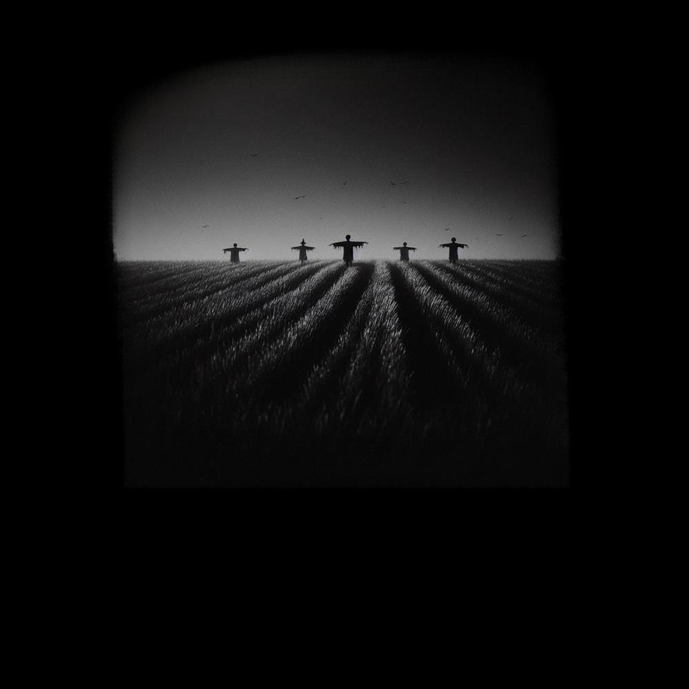

Cathode Reality Tales
Story 7- "Friends"
(written by: Louis Anthony)

In a dimly lit room, the only source of light is the flickering of an old television set casting eerie shadows along the walls. The screen crackles to life, revealing a figure upon the screen shrouded in a haze of static and smoke. “Welcome, viewers, to Cathode Reality Tales.” The voice was smooth, almost hypnotic. The figure stepped closer, and the static resolved into the form of a middle-aged man dressed in a sleek, dark suit.
“Tonight,” the man continued, his eyes piercing through the screen, “we delve into a story of profound loss and the dark depths of human nature. I am your guide, Ray Toob. Join me as we follow a man who, blinded by sorrow, will stumble into the most costly friendship.”
Ray paused, letting the weight of his words sink in. “Our story... begins...”
A small box clutched tightly in his hands, he stood just outside the room where he had visited his father for the last four years. The box contained the last of his father's belongings, a tangible reminder of the man who had been his only family. The cold, sterile air of the facility seemed to press in on him from all sides as he stared down at the box, struggling to process the finality of it all.
His father, once a vibrant and independent man, had been in his eighties when Alzheimer's took hold, gradually robbing him of his memories and independence. He had watched helplessly as the disease progressed, the strong, loving father he had known slipping away bit by bit.
A gentle voice broke through his reverie. "Excuse me, are you Curtis Gabelthorn?" He looked up to see an attractive nurse standing before him, her warm brown eyes filled with genuine concern. She had a kind smile that reached her eyes, offering a small but sincere comfort.
"I'm so sorry for your loss," she said softly, her voice a soothing balm to his aching heart. "Your father spoke of you often, you know. Frank was so proud of you."
Curtis nodded, the gesture feeling hollow in the face of his overwhelming grief. "Thank you," he murmured, his voice flat and emotionless.
The nurse reached out, placing a comforting hand on his shoulder. "If you need someone to talk to, please don't hesitate to call," she continued, handing him a small piece of paper with her number written on it. "It's important to have someone to lean on during times like these."
Curtis took the paper mechanically, barely glancing at the digits. The nurse's empathy was genuine, and her presence offered a small glimmer of warmth in the cold, stark reality of his loss.
The nurse gave him a last sympathetic look before moving on to her next patient, leaving him alone once more. He turned to leave, the weight of the box in his hands matching the heaviness in his heart. The facility's quiet echoed around him as he walked out the door, the nurse's number crumpled in his pocket. Curtis was left with the stark reality of his solitude, the comforting presence of his father now just a memory.
About a week later, Curtis found himself sitting in his boss's office, the atmosphere thick with tension. The sterile, impersonal decor of the office only added to his sense of detachment. His boss, Mr. Thompson, sat across from him, a frown etched into his features.
"Curtis, we've noticed a significant drop in your performance over the past few months," Mr. Thompson began, shuffling a stack of papers. "Your work has become less consistent, and your productivity has declined."
Curtis sighed, a hint of frustration creeping into his voice. "I don't understand. My performance hasn't changed at all."
Mr. Thompson leaned forward, his expression stern. "And that's exactly the problem, Curtis. Your performance hasn't improved. In a constantly evolving workplace, stagnation is just as detrimental as a decline."
Curtis stared at his boss, his eyes dull and lifeless. The words washed over him, barely registering. He had expected this conversation, yet it still felt like an unwelcome intrusion.
As Mr. Thompson continued to outline the reasons for Curtis's termination, a few of his coworkers gathered outside the office, their faces reflecting a mixture of concern and anger. They whispered among themselves, clearly upset by the decision. Curtis caught snippets of their conversation through the door.
"This isn't fair," one coworker muttered. "Curtis doesn't deserve this."
"He's been through so much lately," another added, her voice tinged with sympathy.
Despite their protests, Curtis felt nothing. The apathy that had taken root in his heart since his father's death made it impossible for him to muster any real emotion. The nurse's words from the previous week echoed in his mind, but they brought no comfort.
Eventually, Mr. Thompson finished speaking, a finality in his tone. "I'm sorry, Curtis, but we have to let you go."
Curtis nodded numbly, standing up and accepting the termination papers without a word. As he walked past his concerned coworkers, he gave them a brief, hollow smile, his apathy shielding him from their sympathy.
Curtis trudged up the steps to his apartment, the weight of the day pressing heavily on his shoulders. The termination had left him feeling hollow, and all he wanted was the solace of his own space. He fumbled with his keys, finally managing to unlock the door and step inside.
The apartment was eerily quiet, save for the faint sound of music coming from the bedroom. Curtis's brow furrowed in confusion. He wasn't expecting anyone to be home. As he moved closer, the sounds became clearer, and a sinking feeling settled in his stomach.
He pushed open the bedroom door, and the scene before him made his heart drop. His partner, the person he had trusted and loved, was entangled with someone else. The shock and betrayal hit him like a physical blow, leaving him momentarily paralyzed.
His partner looked up, her eyes wide with guilt and panic. "Curtis, I... I didn't expect you home so early," she stammered, scrambling to cover themselves.
Curtis stood in the doorway, his mind struggling to process the scene. The apathy that had shielded him from his father's death and his job loss now left him numb to this new betrayal. He felt a strange detachment as if he were watching the scene unfold from a distance.
Without a word, he turned and walked out of the apartment, the sounds of hurried apologies and explanations fading behind him. The cold air outside hit him like a slap, but it did nothing to thaw the icy numbness that had settled over his heart. He wasn't sure where he was going, he just knew he wanted to go anywhere but here.
Curtis found himself at the dimly lit bar, nursing a drink that did little to numb the pain gnawing at his insides. The day's events had left him feeling utterly defeated, and he desperately needed the solace of his friends. He pulled out his phone, scrolling through his contacts and sending out a plea for company.
One by one, the replies came back, offering excuses or simply ignoring his message. Curtis's heart sank further with each passing minute. Just when he was about to give up, the door swung open, and an old friend, Aaron, sauntered in.
Aaron took one look at Curtis and sighed. "Curtis, man, this isn't working anymore," he said bluntly, sliding into the seat next to him. "I can't keep doing this. Your constant negativity is dragging me down, and I need to focus on my own life."
Curtis stared at Aaron, the words piercing through the haze of alcohol. "You're kidding, right?" he mumbled, the apathy in his voice barely masking the hurt.
Aaron shook his head. "No, Curtis. I'm serious. I think it's best if we go our separate ways." With that, Aaron stood up and walked out of the bar, leaving Curtis alone once more.
An attractive woman about Curtis's age, who had been sitting at a nearby table, had overheard the exchange. She cast sympathetic glances his way, but Curtis was too wrapped up in his own misery to notice. He downed the rest of his drink, the bitter taste a fitting match for his mood.
Stumbling through the door of his apartment later, Curtis sat down and fumbled with his laptop. The alcohol buzz made his movements clumsy, but he was determined to do something—anything—to feel like he had a shred of control over his life. He navigated to a job posting site and, with a few haphazard clicks and keystrokes, uploaded his resume.
The screen blurred before his eyes, the words blending together in a nonsensical jumble. Frustration and exhaustion overwhelmed him, and he slammed the laptop shut, barely making it to his bed before collapsing. The cold, empty silence of the apartment wrapped around him as he collapsed into a fitful sleep, the events of the day echoing in his mind.
Curtis awoke to the shrill ring of his phone cutting through the morning haze. With a groggy sigh, he reached out, squinting at the caller ID. Unknown number. He hesitated for a moment before answering.
“Hello?” His voice was rough with sleep.
“Good morning, Mr. Gabelthorn. This is Meagan Davies,” came the cheerful, professional voice on the other end. “I hope I’m not catching you at a bad time.”
Curtis rubbed his eyes and sat up, glancing at the clutter of papers on his nightstand. “No, it’s fine,” he replied, trying to sound more awake than he felt.
“I’m calling regarding your application. We’re very interested in having you interview for a position in Eldritch Grove,” Ms. Davies continued. “Would you be available to come in today?”
Curtis’s eyes fell on a stack of past-due bills, the harsh reality of his financial situation pressing down on him. He had hoped that uploading his resume in a drunken stupor might yield some results, but this call felt almost surreal. “Today?” He echoed, stalling for time to gather his thoughts.
“Yes, if possible. We’d love to meet with you as soon as you’re available,” Ms. Davies said, her tone unwaveringly positive.
Curtis sighed and ran a hand through his hair. Eldritch Grove was about an hour’s drive away from Lyles, and the abruptness of it all was jarring. But then again, his life was in desperate need of a change. “Alright. What time works for you?”
“Could you be here by noon?” Ms. Davies asked. “I’ll email you the address and details right away.”
“Sure, I can do that,” Curtis replied, his mind already racing. “Thank you.”
“Great! We look forward to meeting you, Mr. Gabelthorn. Have a wonderful day!” Ms. Davies ended the call, leaving Curtis staring at his phone in a daze.
He slowly swung his legs over the side of the bed and sat there for a moment, letting the reality of the situation sink in. A job interview. In Eldritch Grove. Today. The prospect of new beginnings was exciting, yet unnervingly sudden.
As he shuffled to the bathroom, his eyes caught sight of an envelope tucked partially under a pile of papers. He reached for it, the neat handwriting of his now ex-partner instantly recognizable. Tearing it open, he read the "Dear John" letter for the first time, the words delivering an emotionless end to what had once been a significant part of his life. Beside it, a stack of past-due bills taunted him, a stark reminder of his current reality.
Curtis tore his gaze away and focused on the task at hand. This job interview could be the fresh start he desperately needed. As he prepared to leave, the weight of the letter and the bills lingered in his mind, but he pushed them aside, determined to seize this new opportunity.
A couple hours later Curtis stepped out of his car and looked around, the quaint, rural charm of Eldritch Grove juxtaposed starkly against the sleek, modern facade of the building before him. The town, with its small shops and quiet streets, felt like it belonged in another era. In contrast, the office building looked like a recent transplant from the city, all glass and steel, standing tall and incongruous amid the rustic surroundings.
Taking a deep breath, he approached the entrance. The automatic doors slid open soundlessly, and he was greeted by an expansive, brightly lit lobby. The decor was minimalist, with sleek furniture and abstract art adorning the walls. A receptionist, with a bright smile that seemed almost too perfect, welcomed him.
“Good morning! You must be Curtis Gabelthorn. Welcome to Stormflower Solutions,” she chirped, her voice unnaturally cheerful. “Please sign in and have a seat. Ms. Davies will be with you shortly.”
Curtis nodded and signed the register, noticing the list of other names that seemed curiously uniform in neatness. He took a seat, his mind replaying the series of events that had brought him here. The cheerful atmosphere felt disconcerting, almost as if everyone were in on some joke he wasn’t privy to.
After a few minutes, a woman in her early forties, impeccably dressed, approached him. “Mr. Gabelthorn? I’m Meagan Davies. It’s a pleasure to meet you,” she said, extending her hand.
Curtis stood and shook her hand, her grip firm and confident. “Nice to meet you too,” he replied, trying to match her enthusiasm.
“Shall we?” she gestured towards a corridor leading deeper into the building. As they walked, Curtis couldn’t shake the feeling that something was off. The hallways were spotless, and the few employees they passed all greeted Ms. Davies with the same unnaturally bright smiles.
They reached a conference room where Ms. Davies gestured for him to take a seat. “Thank you for coming on such short notice,” she began, her smile unwavering. “We’ve been very impressed with your resume and believe you’d be a great fit for our team.”
Curtis forced a polite smile. “I appreciate the opportunity,” he said, glancing around the room. It was spacious, with large windows offering a view of the picturesque town below. The contrast between the serene exterior and the oddly cheerful interior made him uneasy.
The interview began, and Curtis couldn’t shake the feeling that every question and response was rehearsed. Ms. Davies’ inquiries were thorough but delivered with an almost mechanical precision. Each time he answered, she nodded approvingly, her eyes never losing their intense focus.
Halfway through the interview, she leaned forward, her expression softening slightly. “I have to admit, Curtis, we’re not just looking for any candidate. We need someone who can handle the unique challenges of Stormflower Solutions. It’s not just about your skills, but also how you fit into our community.”
Curtis raised an eyebrow. “Unique challenges?” he asked, curiosity piqued.
Ms. Davies’ smile widened, but there was something unsettling about it. “Yes, our work environment is quite different from the norm. We foster a very supportive and positive culture here. It’s essential for everyone to feel like part of a family. We believe in seeding success, even in the toughest conditions.”
Curtis nodded slowly, not entirely sure what to make of her words. “I see. I’m certainly open to new experiences.”
The rest of the interview proceeded in the same vein, with Ms. Davies’ questions and Curtis’ responses following a strange, almost scripted pattern. By the time it concluded, Curtis felt mentally drained, though he couldn’t pinpoint why.
Ms. Davies stood and extended her hand once more. “Thank you for coming in today, Mr. Gabelthorn. We’ll be in touch very soon.”
Curtis shook her hand, feeling a strange mix of relief and trepidation. As he walked back to his car, the cheerful greetings of the employees echoed in his mind. Something about Stormflower Solutions was undeniably strange, but he couldn’t deny the allure of a fresh start.
Curtis returned to his apartment, the weight of uncertainty pressing down on him. As he entered, he noticed the blinking light of his answering machine. He pressed play, and Ms. Davies’ cheerful voice filled the room.
“Hello, Mr. Gabelthorn. I’m pleased to inform you that you’ve been offered the position at Stormflower Solutions. We’re excited to have you on board. Please call us back at your earliest convenience to confirm and discuss the next steps.”
A flicker of relief passed through Curtis. He quickly dialed the number, confirmed his acceptance, and hung up, feeling a small spark of hope.
As he moved around the apartment, starting to gather his things, his eyes landed on the “Dear John” letter on the kitchen table. With a sigh, he picked it up, feeling the sting of the words one last time. Without much thought, he crumpled it up and tossed it into the trash.
Unbeknownst to him, the nurse’s phone number, which had been lying next to the letter, was swept up in the same motion and discarded alongside it.
He then notified his landlord of his intention to move out. With a sense of urgency propelling him, Curtis searched online for a cheap house in Eldritch Grove. Within hours, he found a modest place that suited his needs and put in a bid.
The next morning, his phone rang again. This time, it was a real estate agent informing him that his bid had been accepted. Curtis packed up his belongings, ready to leave behind the remnants of his old life and embrace the promise of a fresh start in a new town.
Curtis loaded the last of his boxes into the car, the early morning light casting long shadows across the driveway. As he settled into the driver’s seat, he took a deep breath, the familiar scent of his old life mingling with the hope of a fresh start. The engine roared to life, and he began the drive to Eldritch Grove.
The countryside stretched out before him, a patchwork of fields and forests, offering a peaceful backdrop for his thoughts. Curtis couldn't help but reflect on everything that had happened. The loss of his father, the breakup, the job termination—all these events had left him questioning himself.
Was he really so bad? Had he been a poor partner, a mediocre employee, a distant son? The thoughts gnawed at him, but he pushed them aside, focusing on the road ahead. This move was his chance to redefine himself, to prove that he could thrive even after the storm.
As Eldritch Grove came into view, Curtis felt a mix of trepidation and anticipation. The quaint town held the promise of new beginnings, and Stormflower Solutions awaited him with an opportunity to rebuild his life. He tightened his grip on the steering wheel, determined to make the most of this second chance.
Curtis moved into his new home with a sense of cautious optimism. As he unloaded his boxes, he noticed a man approaching from the house next door. The man, who introduced himself as Brian, turned out to be Meagan Davies' brother. They quickly bonded over their shared love of fishing and Henry trucks, the conversation flowing easily as if they had known each other for years. Brian’s friendly demeanor was a welcome change, making Curtis feel instantly more at ease in this new place.
The next day, Curtis started his new job at Stormflower Solutions. The work was oddly simple and relaxing, almost too perfect to be true. He found himself loving every minute of it, appreciating the structure and the positive environment. The eerie feeling he had during the interview was forgotten as he settled into the routine.
As Curtis met more of his coworkers, he was pleasantly surprised. Everyone was kind and welcoming, making him feel like part of a big, supportive family. It wasn’t long before he learned an unsettling fact: the previous owner of his house had been a serial killer. This revelation explained the surprisingly low price he had paid for the place. Despite the grim history, Curtis felt unbothered, attributing it to the odd charm of the town.
Exploring the town of Eldritch Grove, Curtis found it to be a lovely, albeit slightly eerie place. The picturesque streets and friendly faces masked a subtle undercurrent of something he couldn’t quite put his finger on. He chalked up his unease to the lingering effects of discovering his home’s dark past.
Returning home each evening, Curtis felt content for the first time in ages. As he settled into his cozy new space, he mulled over the significance of his house's history. Ultimately, he decided it held no real bearing on his life. For the first time in what felt like forever, Curtis was genuinely happy, ready to embrace whatever this peculiar town had in store for him.
Curtis spent the next three weeks settling into his new life in Eldritch Grove. His days were filled with unpacking, exploring the town, and making his new house feel like home. As he went about his routine, he couldn’t help but overhear the occasional whispers from the townspeople. They spoke in hushed tones about an evil spirit that had supposedly possessed him, a remnant of the house’s dark past.
Curtis found the rumors more amusing than alarming. Whenever confronted, he’d joke, “Don’t worry, the only thing I’m in danger of killing is a box of Shelcey Sweets cupcakes!” His lighthearted responses usually dispelled the tension, eliciting chuckles from those around him. The townspeople’s superstitions seemed harmless enough, and Curtis was determined not to let them affect his fresh start.
Spending time with Brian continued to be a highlight of Curtis’s new life. Through Brian, Curtis was introduced to a circle of friends who were warm and welcoming. To his surprise, many of them were familiar faces from Stormflower Solutions. It seemed that the close-knit community extended beyond the office walls.
Brian’s gatherings became a regular occurrence, filled with laughter, shared stories, and genuine camaraderie. They spent weekends fishing, working on their trucks, and even having impromptu barbecues. Curtis found himself quickly bonding with his coworkers-turned-friends, appreciating their support and kindness.
One evening, as they gathered around Brian’s fire pit, Curtis marveled at how easily he had become part of this new community. The warmth and acceptance he felt were unlike anything he had experienced before. His new friends were a mix of personalities—each bringing their own flavor to the group—but they all shared a common thread of genuineness and support.
Despite the whispers and superstitions of the townspeople, Curtis found solace in these relationships. The eerie undercurrent of the town faded into the background as he immersed himself in the simple pleasures of friendship and belonging. For the first time in a long while, Curtis felt truly at home.
Curtis received an invitation from Megan Davies to attend a special gathering. It was to be a private event, just a few close friends from work. Curious and a bit honored, Curtis agreed to go.
The gathering was held in the field behind Meagan's home. As Curtis arrived, he was greeted warmly by Josh Glenn, Kollin Jacobs, Samantha, and her husband Dean Browning. The atmosphere was convivial, but there was an undercurrent of something more serious.
As the evening progressed, Megan offered Curtis a drink. "What would you like?" she asked with a smile.
"I'll have a soda, thanks. I've given up alcohol," Curtis replied, appreciating the gesture. Megan handed him a glass of soda, and Curtis took a grateful sip, it was cool and refreshing.
The conversation took a turn as Megan began speaking about a Great Deity, a protector that would watch over them and smite evil with great and furious vengeance. Curtis, initially amused by the fervor, noticed the intensity in Megan’s eyes and the reverence in the others’ expressions. The air seemed to thicken with an unspoken tension. Despite the unsettling vibe, Curtis played along, unsure of how serious they were.
As the night wore on, Curtis started to feel strangely drowsy and disoriented. The room seemed to close in around him, the faces of his friends blurring together. He found himself surrounded by his friends in what seemed to be a hastily arranged ritual. The mood had shifted from light-hearted camaraderie to something darker and more ominous. Megan’s voice broke through the silence, chanting words that felt ancient and powerful. The others echoed her, their voices blending into a haunting harmony.
Curtis’s confusion turned to fear as he realized he was at the center of this ritual. Megan stepped forward, her eyes filled with a strange light. “Curtis, you have been chosen,” she intoned solemnly. “The spirit that possessed the previous owner of your house still lingers, and you are the key to capturing it and stopping it forever. This ritual will bring forth the great Defender, as foretold in the ancient texts.”
Curtis tried to protest, but his tongue seemed to completely disobey him. Anything like a word he formed was drowned out by the chanting. He felt a cold dread settle over him as the realization of their intentions sank in.Bound by an unseen force and weakened by the drug, Curtis felt the energy around him intensify. The sky above began to darken and twist, the very air vibrating with an unearthly power. Megan’s chanting grew louder, her voice piercing through the chaos.
As the ritual reached its crescendo, Curtis looked up to see the sky fracture as the circle of friends plunged something sharp into him from all sides. Curtis grunted, his eyes oepen in terror staring up at the sky tearing open, revealing a realm of nightmares beyond. Terrible, otherworldly creatures began to pour through the rift, their forms shifting and writhing in ways that defied comprehension as the five killers dropped Curtis to the ground.
The last thing Curtis saw was the five of them—Josh, Kollin, Sam, Dean, and Megan—standing over him, their faces a mix of awe and terror as they turned to look at the sky. Something ancient was being drawn out, but that something didn't look righteous at all. That ancient something looked evil, and it came at a great cost. The nightmares that followed were beyond anything Curtis could have imagined.
Ray Toob appeared, walking past the ritual circle, his eyes intense and voice steady, drawing the viewers into the dark embrace of his closing monologue as the chilling climax of the sacrifice unfolded behind him.
“And so, dear viewers, remember—what appears to be a fresh start can conceal the darkest of intentions. In the realm of the Cathode Reality, trust is a fragile thing, easily shattered by the cruel machinations of fate. And if you can't trust yourself, who can you trust?"
Ray’s gaze lingered, the static intensifying as he continued: "Until next time, keep your eyes open and your senses sharp. You never know what might be lurking just beyond the screen.”
With a final, lingering glance, Ray Toob faded into the static, leaving viewers with a chilling sense of unease and a reminder of the mysteries that lie just beyond their perception.
